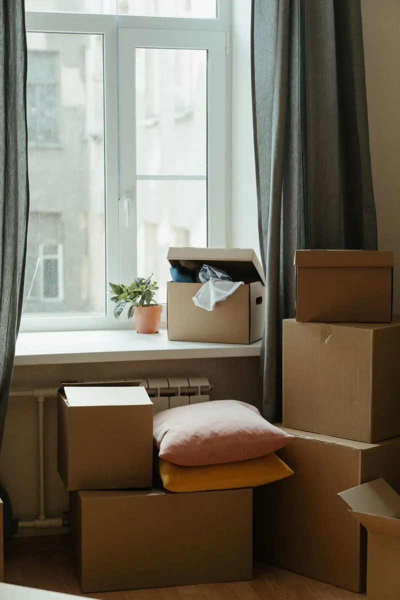
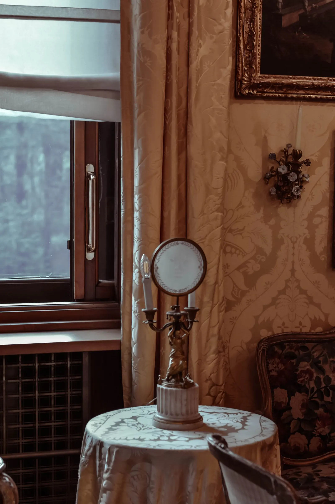
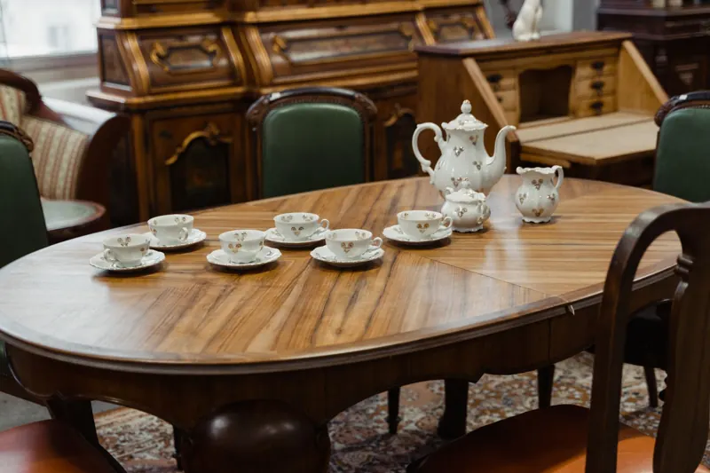
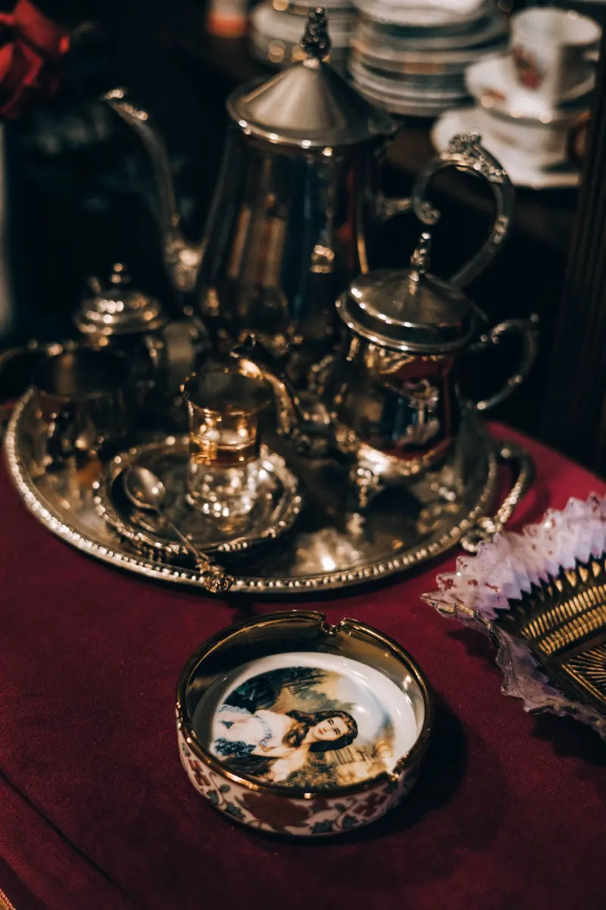
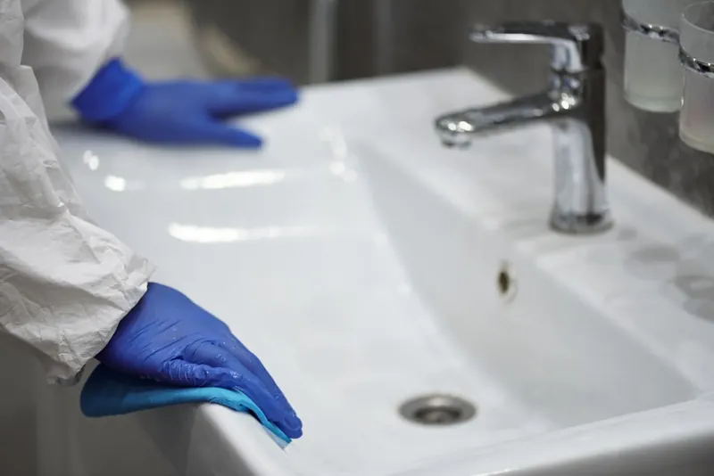
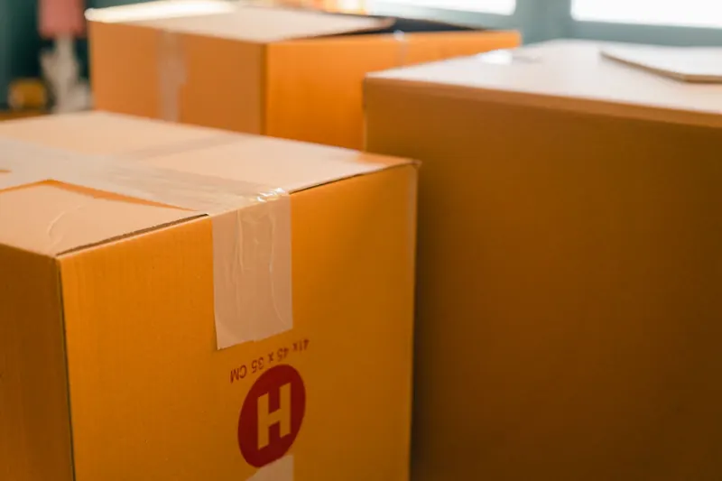
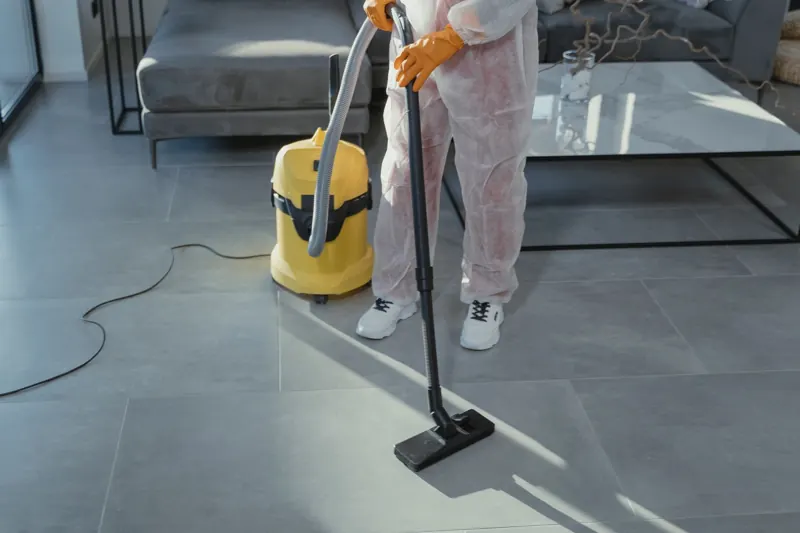
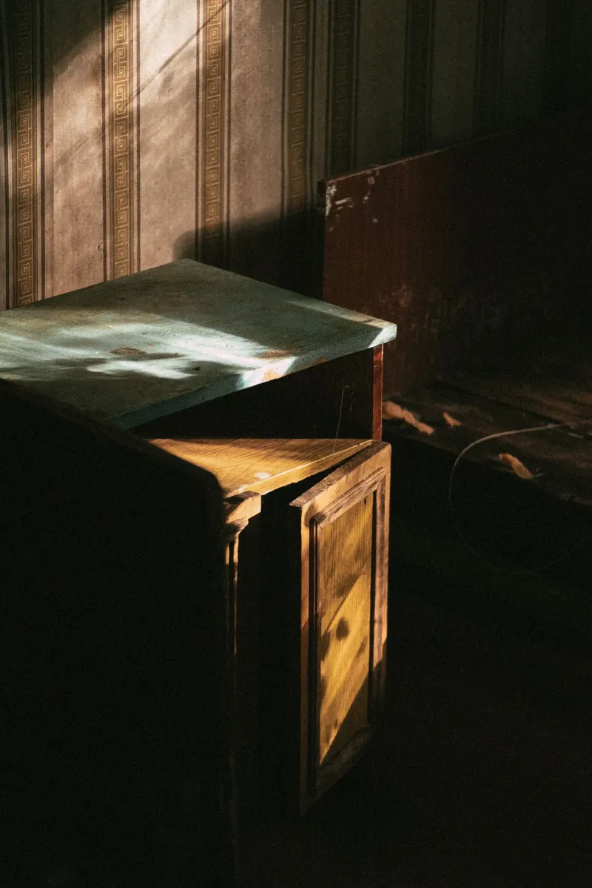
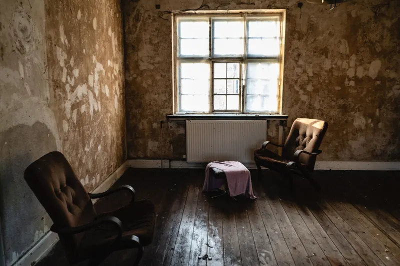
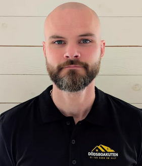

Tömma dödsbo
Komplett hjälp med sortering, bortforsling och återvinning av bohag. Vi tar hand om hela hemmet, från små lägenheter till stora villor och gårdar.
Läs mer →Tömning, värdering, köp, städning och sanering av dödsbo i Göteborg och hela Västsverige. En kontaktperson genom hela processen, ofta på plats inom 24 timmar.
Dödsboakuten är en trygg helhetsleverantör för hantering av dödsbon i Göteborg, Halland och hela Västsverige. Att ta hand om ett dödsbo är känslomässigt tungt och fullt av praktiska uppgifter. Därför tar vi ansvar för hela processen, från första bedömning till tömt, städat och överlämnat hem.
Vi hjälper privatpersoner, anhöriga och fastighetsägare, i allt från små lägenheter till stora villor och gårdar. Vi arbetar snabbt, respektfullt och med personlig kontakt, och samarbetar med mäklare, jurister och städföretag när uppdraget kräver det.
Våra tjänster
Därför Dödsboakuten
Snabb hjälp, en kontaktperson och respekt för hemmet. Så enkelt ska det vara att få ett dödsbo omhändertaget.
Kontakta ossVid akuta situationer kan vi ofta vara på plats inom ett dygn.
Vi börjar alltid med ett besök utan kostnad och ett tydligt förslag.
Samma person genom hela uppdraget, från första samtal till överlämning.
Tömning, värdering, köp, städning, röjning och fyra typer av sanering.
Allt som behöver göras när ett hem ska avvecklas, genom en och samma kontakt.

Komplett hjälp med sortering, bortforsling och återvinning av bohag. Vi tar hand om hela hemmet, från små lägenheter till stora villor och gårdar.
Läs mer →
Professionell värdering av bohag, möbler, konst, smycken, design och samlarföremål. Vi hjälper dig att se vad som har ett värde innan något körs bort.
Läs mer →
Vi köper hela eller delar av dödsbon: antikviteter, möbler, konst, samlarföremål och verktyg. Snabb värdering och personlig service.
Läs mer →
Noggrann städning och återställning av bostaden efter tömning, så att den kan lämnas till försäljning, uthyrning eller överlämning.
Läs mer →När bostaden kräver mer än städning. Vi hjälper privatpersoner, anhöriga, fastighetsägare och företag.

Röjning, sortering och bortforsling av möbler, bohag och tillhörigheter, med återvinning och städning via en och samma kontakt.
Läs mer →
Diskret och professionell sanering av bostäder efter tömning, inklusive lukt- och hygienproblem, så att bostaden återställs i gott skick.
Läs mer →
Erfaren och respektfull hjälp vid kraftigt belamrade bostäder. Sortering, bortforsling, avfallshantering och återställning.
Läs mer →Professionell sanering av blod, kroppsvätskor och biologiskt material efter olyckor eller dödsfall. Diskret, snabbt och säkert.
Läs mer →
Diskret och professionell sanering efter dödsfall: biologiskt material, lukt och återställning av bostäder och lokaler.
Läs mer →Osäker på vad ni behöver? Ring 070-559 04 65 så går vi igenom situationen tillsammans.
Fem steg från första samtal till tomt, klart hem.
Ring eller skicka en förfrågan. Vi lyssnar in situationen och bokar en tid som passar er.
Vi besöker bostaden, går igenom bohaget och ger en tydlig bild av vad som behöver göras.
Tillsammans bestämmer vi omfattning, tidsplan och vad som ska sparas, säljas, skänkas eller bort.
Vi tömmer, värderar, köper, städar och sanerar enligt planen, med en kontaktperson hela vägen.
Bostaden lämnas tom och klar för försäljning, uthyrning eller överlämning till hyresvärd.
Vi utgår från Hisings Backa och arbetar i hela Göteborgsregionen. Vi tar även uppdrag längs kusten och inåt landet, i hela Västra Götaland och Halland.
Saknas din ort? Hör av dig, vi hjälper ofta till även utanför de områden som listas här.

Möt oss
”Ett dödsbo är ett helt liv i föremål. Vårt jobb är att göra det praktiska enkelt, så att ni får utrymme för det som är svårt.”
Dödsboakuten drivs med erfarenhet från många dödsbon i Göteborg och Västsverige, från små lägenheter till stora villor och gårdar. Du har samma person att vända dig till genom hela uppdraget, och vi arbetar alltid med respekt, diskretion och omtanke om både hemmet och de anhöriga.
Förtroende byggs i varje uppdrag.
Vi publicerar endast omdömen från verkliga kunder. Vill du höra hur tidigare uppdragsgivare upplevt vårt arbete, eller har du själv anlitat oss och vill dela din upplevelse, hör av dig.
Vanliga frågor
Hittar du inte svaret? Ring oss så reder vi ut det tillsammans.
070-559 04 65Vid akuta situationer kan vi ofta vara på plats inom 24 timmar. Ring oss på 070-559 04 65 så går vi igenom läget direkt.
Den första bedömningen av dödsboet är kostnadsfri. Efter att vi sett bostaden och gått igenom era önskemål lämnar vi ett tydligt förslag på upplägg.
Vi utgår från Hisings Backa i Göteborg och arbetar i hela Göteborgsregionen samt Halland, Bohuslän och övriga Västsverige, bland annat Mölndal, Partille, Lerum, Kungälv, Kungsbacka, Borås, Halmstad, Varberg, Falkenberg, Uddevalla och Trollhättan.
Ja. Vi köper hela eller delar av dödsbon beroende på innehåll och situation, till exempel antikviteter, möbler, konst, samlarföremål och verktyg. Det som inte köps kan vi hjälpa till att forsla bort.
Ja. Vi erbjuder en komplett lösning där värdering, köp, tömning, bortforsling, städning och sanering hanteras genom en och samma kontakt. Vi samarbetar också med flera aktörer i branschen när det behövs.
Vi sorterar bohaget strukturerat tillsammans med er eller enligt era instruktioner. Värdefulla föremål identifieras innan något körs bort, och ni avgör vad som ska sparas, säljas, skänkas eller slängas.
Måndag–fredag 08:00–18:00. Helger enligt överenskommelse.
Kontakt
Den första bedömningen är alltid kostnadsfri. Ring, mejla eller fyll i formuläret så hör vi av oss, oftast samma dag.
Exportgatan 73, 422 46 Hisings Backa
Måndag–fredag 08:00–18:00
Helger enligt överenskommelse